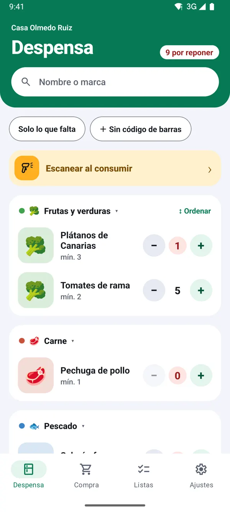
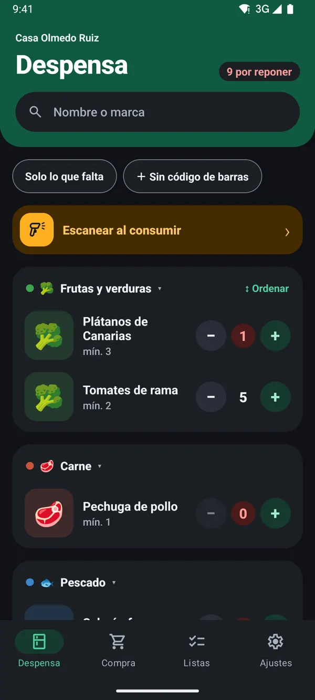
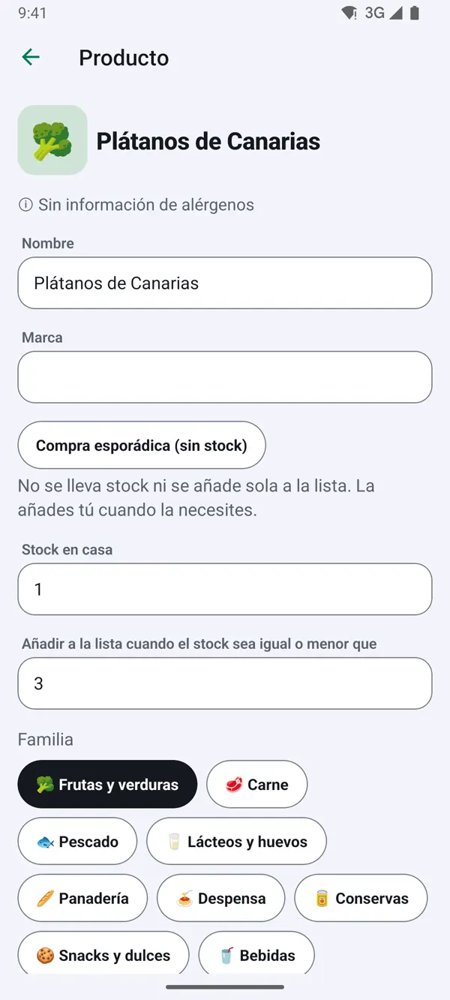
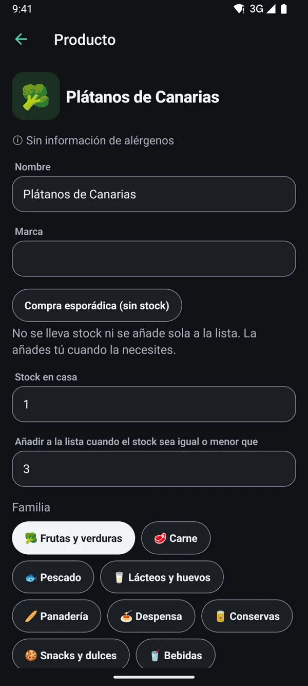

Cómo organizar la despensa de casa paso a paso
Actualizado el 13 de noviembre de 2026
Una despensa organizada no es la que queda bonita en una foto, sino la que te dice de un vistazo qué tienes y qué falta. Si en casa compráis entre varias personas, además tiene que funcionar sin depender de que alguien se acuerde. Estos son los pasos que mejor funcionan, y cómo hacerlos con TuDespensa.
1Vacía y haz inventario una sola vez
Saca todo de los armarios, tira lo caducado y apunta lo que queda. Es la parte más pesada, pero solo se hace al principio: a partir de ahí basta con apuntar lo que entra y lo que se gasta.
- Con TuDespensa, escanea cada paquete con Escanear al consumir y di cuántos tienes.
- Lo que no tiene código (fruta, pan del horno), añádelo con Sin código de barras.


2Agrupa por familias, no por tamaño
Junta los productos según cómo los usas: legumbres y pasta, conservas, desayuno, lácteos, limpieza, higiene. Cuando cada familia tiene su sitio fijo, cualquiera de casa sabe dónde mirar y dónde guardar al volver de la compra.
- Lo que más gastáis, a la altura de los ojos.
- Lo pesado y las botellas, abajo.
- Las reservas detrás del paquete abierto, nunca delante.
Truco: en la ficha de cada producto eliges su familia. En Ajustes puedes crear familias propias con su icono y color.


3Decide un stock mínimo para cada producto
Este es el paso que cambia todo. Para cada producto, piensa cuántas unidades quieres tener como mínimo: dos bricks de leche, un paquete de arroz, cuatro latas de atún. Cuando quede menos que eso, va a la lista de la compra. Así compras antes de quedarte sin nada y sin llenar los armarios de más.
- Stock en casa: lo que hay ahora.
- Añadir a la lista cuando el stock sea igual o menor que: tu mínimo.
4Aplica «primero lo que entró primero»
Al reponer, coloca lo nuevo detrás de lo que ya tenías. Es la forma más sencilla de evitar que algo caduque olvidado al fondo del armario.
5Apunta en el momento de gastar, no de comprar
El error más común es actualizar el inventario solo al volver del súper. Lo que de verdad dice qué falta es lo que se gasta: el último yogur, el paquete de café que se abre. Si cada persona de casa lo apunta al momento, la lista se mantiene sola.
Truco: en Escanear productos para que la despensa baje sola tienes este paso explicado con detalle.
6Revisa una vez al mes
Dedica cinco minutos al mes a ajustar mínimos: si algo se acaba siempre antes de tiempo, súbelo; si se acumula, bájalo. Con un par de ajustes, la despensa se adapta a lo que realmente consume tu casa.
TuDespensa es gratis y sin anuncios.
Llegará primero a Android y, más adelante, a iPhone. Las capturas son de la app con una casa de ejemplo.
Más guías
Escanear productos para que la despensa baje sola
El escaneo al gastar y el stock mínimo, paso a paso.
Compartir la despensa con tu familia
El código de la casa y cómo entra cada móvil.
Hacer la compra por supermercado
La lista por súper, el carro y terminar la compra.
Reponer la despensa con una foto del ticket 
De la foto del ticket a la despensa repuesta.
Qué incluye TuDespensa Pro y cuánto cuesta
Qué hace Pro, su precio, la prueba gratis y los tickets al mes.
Revisar el ticket antes de reponer
Dudas, productos nuevos y unidades, antes de confirmar.
Hacer una buena foto del ticket
Ticket entero, plano y con luz, o mejor el PDF.
Lista de la compra compartida en familia
Cómo dejar de comprar dos veces lo mismo y de olvidar lo que falta.